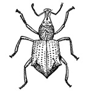

PESTS OF RICE (BORERS AND FOLIAGE FEEDERS) :: Minor Pests :: Rice Root Weevil - 1
14. Rice root weevil: Echinocnemus oryzae (Curculionidae: Coleoptera)
Damage symptoms: Grubs feed on the roots of rice plants resulting in stunting and non formation of tillers. Presence of dead plants in large patches is a typical symptom. Bionomics: The adult weevil is shiny black with oblong body covered with greyish scales. The female lays eggs in soil near the roots of grasses. The incubation period is 3-4 days. The grub is creamy white, aquatic and feeds on root hairs. The larval period lasts for 11 months. The grub over-winters in soil at a depth of 25-30 cm, after September. It pupates during May. The pupal period is 10-12 days. |
 |